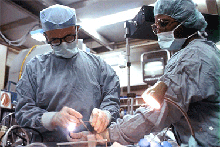

4
選ばれる
4
選ばれる
1.
通院が難しい方にも
クリニックへの通院が困難な患者様に対して、
医師が定期的にご自宅へ訪問して診療を行います。
日常的な診察や健康管理で、症状の悪化を未然に防ぐ役割もあります。
2.
まとまったお休みが無くても
医療機器の進歩により、入院が必要だった手術もその日に帰ることができるまでにな りました。専門医とスタッフの体制も整えて、急な手術にも対応します。
3.
気になった時にすぐ聞ける
お電話やメールで目の異変や気になる症状をご相談頂けます。 クリニックまでは行けないけど、何も知らないままなのは不安。そんな方のお力になります。
4.
様々な症状に対応可能
眼だけでも様々な異変があり、症例があります。 その全てに万全な対応ができるよう、それぞれの分野で高度な治療が可能な医師を在籍させています。
まずはお気軽にお問い合わせください！
視力検査というと、視力の数値を確認して終わり。
そんな感覚の方が多いのではないでしょうか？
もちろんそれも大切なことですが、本来の目的は別にあるんです。
病気の早期発見
眼の病気が悪化すると、最悪失明をしてしまったり、普段の生活が 不自由になる可能性があります。さらに、自分では気付けない眼の 状態や症状が、医師の診断で見つかることもあります。
まずは、視力検査の機会を作ってみてください
「健康診断受けたからいいや」、「見えにくいとかないから大丈夫」、 と思っている人も、一度検査を受けてみることが大切です。
そんな視力検査、
適切な頻度があります。
それは、
3ヶ月に1回
この頻度が通常の目安ですが、特に違和感を感じた時はすぐに受診することをお勧めします。
Landolt ring
「C」のようなマーク（ランドルト環）の切れ目がどこまで見えるかで行う視力検査。
Autoref measurement
オートレフという機械をのぞいて、画面上の気球や家を見え方から判定する視力検査。
Red-green test
赤と緑の2色を使って、どちらの色がはっきり見えるかを測定する視力検査。
受診前
受診当日
webまたはお電話での予約が可能です。
初診の方は受付問診票の記入が必要です。 症状に関する情報を記載して頂きます。
専用機器で検査を行います。
医師が症状を伺います。その後、顕微鏡を使用して眼の状態を診ます。
お薬を処方された場合は、使用方法の説明があります。
(院内での処方です)
お会計をしたら終了です。
まずはお気軽にお問い合わせください！
家まで来てくれるのが本当に助かる
足が悪く、クリニックに行くのも家族の手を借りるので困っていました。 目も心配なところがあったので、簡易的な検査を自宅でもやってくれて本当に助かりました。
(50代・男性)

コンタクトに相性があるとは...
健康診断で受けましたが、検査頻度の勧めを見て念の為に。 普段使っているコンタクトがあまり相性がよくなかったみたいです。 こういう機会がないと気付けなかったなぁと思いました。
(40代・女性)
説得力があって安心できるアドバイスです
PC仕事で眼の疲れを毎日感じていたので、今の状態を知るた
めに検査しました。
悪い状態ではありませんでしたが、眼の専門医から受けるアドバイスはとても信頼できると感じました。
(30代・女性)
いいえ。完全予約制ではありません。
ただし、ご予約されているお客様から優先してご案内しております。
混雑時には、待ち時間が長くなる場合もございますので、
ご予約してからの来院をお勧めしております。
はい。当日のご予約はお電話に限り、受け付けております。
ただし、当日の状況次第ではお取りできない場合もございます。
インターネットでの当日予約はできませんのでご注意ください。
視力測定だけであれば眼鏡屋さんでも大丈夫です。
ただ、異常があった際に詳しく調べることができるのは眼科です。
不安に思うことが少しでもあれば眼科での検査をお勧めします。
スマホやPCなどを見続けるなど目が疲れた状態で受けること。
近くのものをずっと見ていると眼筋を酷使します。
目に負担がある状態での測定は正確でない場合があります。